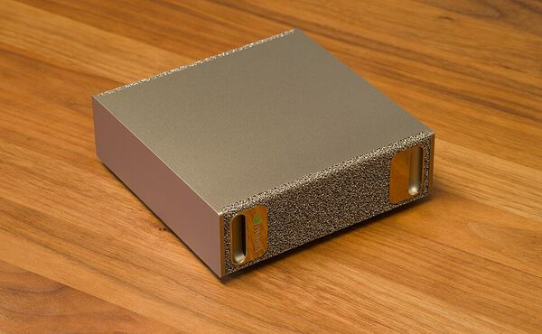
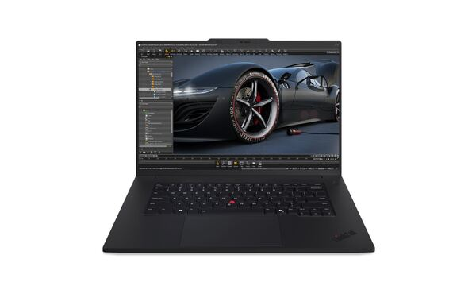
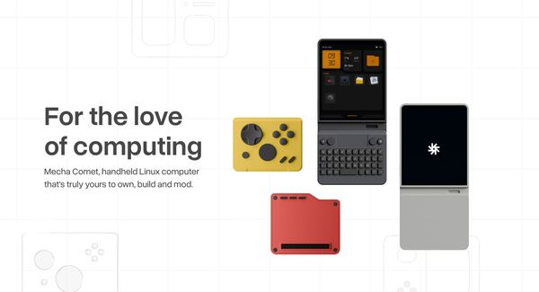
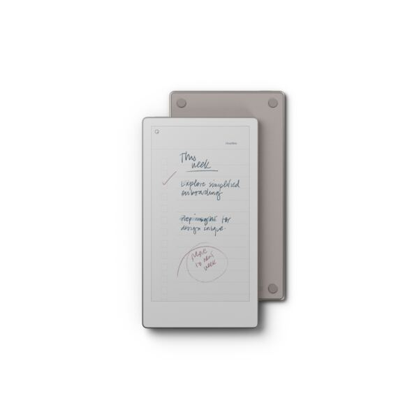
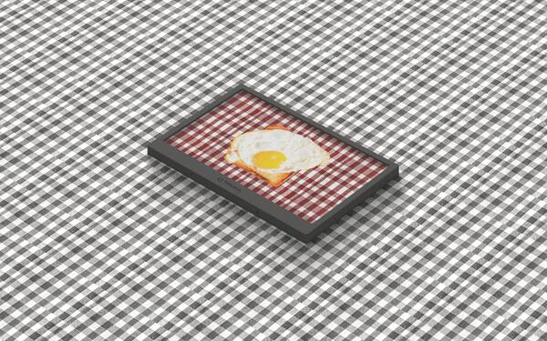
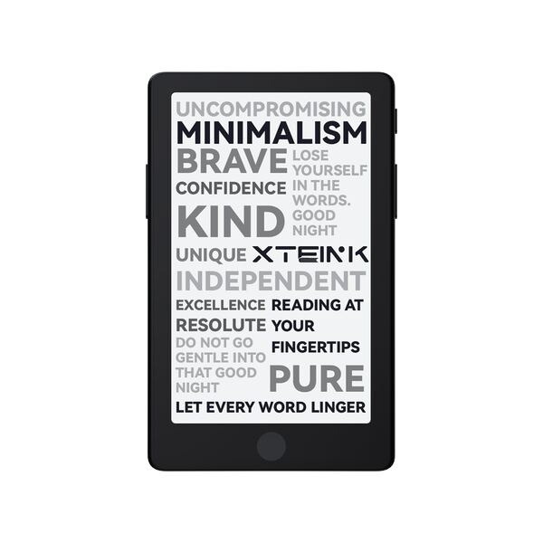
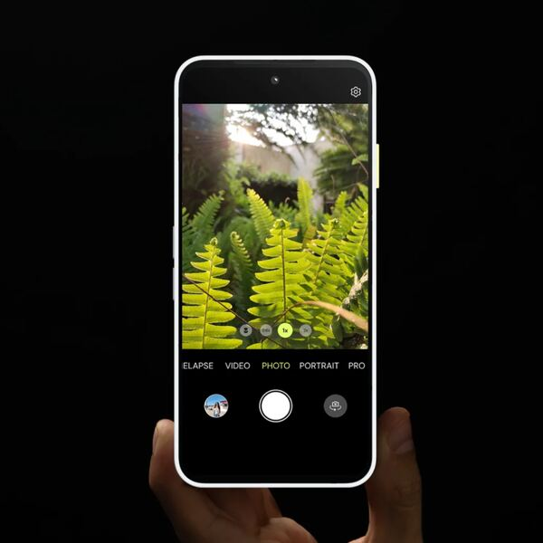
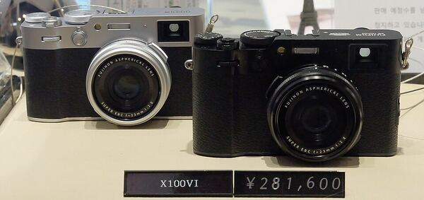
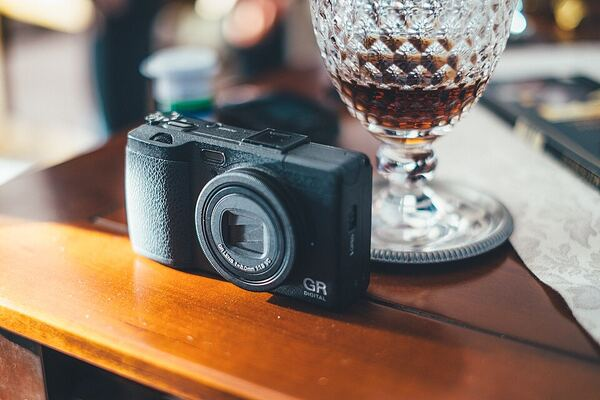

Wishlist
Table of Contents
Introduction
This small page is my wishlist. So if you want to gift me something... Note some devices are pretty expensive and I don't expect anyone to buy them for me. This list is also for myself, so maybe I will gift one of these to myself at some point (e.g. for my Birthday) :-)
Don't take the ordering too seriously — it shifts depending on what I'm currently fiddling with. Items move up when a project of mine suddenly needs them, and down again once the urge passes.
⠀⠀⠀⠀⠀⠀⠀⣠⡶⢶⣤⡀⠀⠀⠀⠀⠀⠀⢀⣤⡶⢶⣄⠀⠀⠀⠀⠀⠀⠀
⠀⠀⠀⠀⠀⠀⠀⣿⡀⠀⠈⠛⢷⣄⠀⠀⣠⡾⠛⠁⠀⢀⣿⠀⠀⠀⠀⠀⠀⠀
⠀⠀⠀⠀⠀⠀⠀⠘⢿⣤⣀⠀⠀⣤⣤⣤⣤⠀⠀⣀⣤⡿⠃⠀⠀⠀⠀⠀⠀⠀
⠀⠀⠀⠀⢀⣀⣀⣀⣀⣈⣙⣛⡀⠙⣛⣛⠋⢀⣛⣋⣁⣀⣀⣀⣀⡀⠀⠀⠀⠀
⠀⠀⠀⠀⣿⣿⣿⣿⣿⣿⣿⣿⡇⢸⣿⣿⡇⢸⣿⣿⣿⣿⣿⣿⣿⣿⠀⠀⠀⠀
⠀⠀⠀⠀⠉⠉⣉⣉⣉⣉⣉⣉⡁⢸⣿⣿⡇⢈⣉⣉⣉⣉⣉⣉⠉⠉⠀⠀⠀⠀
⠀⠀⠀⠀⠀⠀⣿⣿⣿⣿⣿⣿⡇⢸⣿⣿⡇⢸⣿⣿⣿⣿⣿⣿⠀⠀⠀⠀⠀⠀
⠀⠀⠀⠀⠀⠀⣿⣿⣿⣿⣿⣿⡇⢸⣿⣿⡇⢸⣿⣿⣿⣿⣿⣿⠀⠀⠀⠀⠀⠀
⠀⠀⠀⠀⠀⠀⣿⣿⣿⣿⣿⣿⡇⢸⣿⣿⡇⢸⣿⣿⣿⣿⣿⣿⠀⠀⠀⠀⠀⠀
⠀⠀⠀⠀⠀⠀⣿⣿⣿⣿⣿⣿⡇⢸⣿⣿⡇⢸⣿⣿⣿⣿⣿⣿⠀⠀⠀⠀⠀⠀
⠀⠀⠀⠀⠀⠀⣿⣿⣿⣿⣿⣿⡇⢸⣿⣿⡇⢸⣿⣿⣿⣿⣿⣿⠀⠀⠀⠀⠀⠀
⠀⠀⠀⠀⠀⠀⠿⠿⠿⠿⠿⠿⠇⠸⠿⠿⠇⠸⠿⠿⠿⠿⠿⠿⠀⠀⠀⠀⠀⠀
Productivity
NVidia DGX Spark

... or a-like device so I can run local models like Qwen, Gemma, etc. Right now I only rent cloud GPUs when I need one or simply use Cloud API providers. A dedicated box with a sane amount of VRAM (e.g. 128GB) would let me stop renting for experiments that go nowhere and just leave something running at home.
What I'd do with it:
- Agentic coding with the smaller models — Claude Code / Codex --oss / OpenCode talking to Ollama or GPT-OSS 120b, in-editor completion via Hexai, and the odd multi-agent run where Nemotron orchestrates and another model codes. Qwen 3.6 and Gemma 4 would do most of the heavy lifting.
- Bulgarian — BG-GPT for learning, BG-TTS for voice, generating stories from my own vocab lists, and translating foo.zone articles to my level.
- Overnight creative batch jobs — ComfyUI / Flux for images and comics, continuing novel stories, Gemma 4 for OCR on scanned bills.
- A private RAG over my notes, blog and handwritten journals — RSS fetcher plus a Kagi-search summariser, summarising whole books, and spell-checking my writing.
- Background code review on every commit (SOLID, QA, Go best practices) and a nightly audit that files Taskwarrior tasks for whatever it finds.
- Letting a slow model just chew on batch jobs overnight, with two Pi agents keeping each other alive.
ThinkPad P1

For a large display and good CPU performance for photo editing, coding and media content consumption. My current laptop is fine but a 16-inch workstation with a proper HX-class CPU would be a noticeable step up for the heavier stuff — and a big, colour-accurate panel doesn't hurt for culling photos either. If I spec it with an RTX GPU (or a Ryzen AI part) and it behaves on Linux, it could double as a local-LLM host too.
Gadgets
Mecha Comet

I've pre-ordered this already on Kickstarter. It's one of those small handheld Linux gadgets that probably won't change my life but I'm a sucker for a well-made keyboard and a pocketable terminal.
What I'd actually use it for:
- A travel Linux station — external DisplayPort monitor, mobile VPN hotspot, WireGuard tunnel straight into my home LAN.
- Music player with an external USB DAC, ideally a Navidrome client with EQ and a visualizer.
- Retro gaming — Duke Nukem 1/2, console emulators, Pico-8, and Steam (it ran on a Pi3, so why not here).
- Podcast player fed by my own podcast downloader, unless a native one already does the job.
- Quicklog / jotting down ideas on the go, plus a Pomodoro timer and Taskwarrior (Task Samurai) when I'm away from the desk.
- The boring-but-useful bits: weather forecast, Wi-Fi analyser, document & password store, and a small Umhängetasche to carry it in.

I'll run it purely offline — no cloud sync, no account beyond what's strictly needed. It's meant to be my always-with-me note taker, since it's even compacter than my Supernote Nomad I already have. Pen on paper feel in something that actually fits in a jacket pocket is the whole appeal.
TRMNL

An always-on e-ink info screen for the home office, and the whole thing is open-source software driven — I can self-host the backend and point it at whatever I want. I'm leaning towards the 4-color (BWRY) one, since a bit of red and yellow goes a long way on a dashboard.
What I'd put on it:
- Gogios status — a glance at whether the homelab is happy.
- A Taskwarrior dashboard, so the current task is always sitting there on the desk.
- A habit reminder, because apparently I need one.
XTeink X4 Pro

Only once the CrossPoint open-source firmware supports highlight by touch. Which it doesn't at the moment. I read a lot of ePubs and articles, and the whole point of an e-ink reader for me is marking things up without a laptop in front of me — so until that lands I'll keep waiting rather than buying something I'll be mildly annoyed by.
Fairphone 6

A repairable, long-lived phone — and the one I keep coming back to is running Ubuntu Touch. So this is conditional: I only want it once Ubuntu Touch is fully supported on the Fairphone 6. The draw is the desktop mode (plug in a monitor and it's a little Linux box), plus the usual Ubuntu Touch app wishlist — KOReader, Navidrome/Subsonic client, Syncthing, WireGuard, Wallabag, a markdown notes app, that sort of thing. Until the port is properly done, I'll keep what I have.
Not that I'm in a rush — my current phone is a Pixel 7 Pro on GrapheneOS, going on almost five years now, and it's been great. But it runs out of software updates next year, so there's a natural deadline creeping up. That's really the timing: if Ubuntu Touch on the Fairphone 6 lands around then, it'd be a clean swap.
Then again, I'm not fully decided on Ubuntu Touch yet. There's meant to be a Motorola + GrapheneOS announcement around this year or next about officially supporting Motorola devices — and if that lands, a Razr Fold on GrapheneOS might be the more sensible pick. So really it's wait-and-see between the two: Ubuntu Touch on the Fairphone 6, or GrapheneOS on a Motorola foldable.
Photography
Fujifilm X100VI

I've the X100V already, that's why I hesitate to upgrade, really. The V still takes the same photos; the VI mostly tempts me with the nicer film simulations and a bit more resolution I don't strictly need. If I ever find a good trade-in deal I'll probably cave, but it's hard to justify at full price or I will simply wait for a future X100VII or I will wait until my X100V breaks down! And if I do get one, it has to be the silver — the black one is too stealthy for my taste.
Ricoh GR IV

I had a Ricoh GR III, but it's kaputt now. This was/will be my always-with-me-camera. There's nothing else quite like a GR for fitting in a jacket pocket and disappearing into a crowd — the phone is fine for snapshots but it's not the same thing. Whenever the IV is actually in stock and not marked up to the moon, I'll likely grab one.
Go back